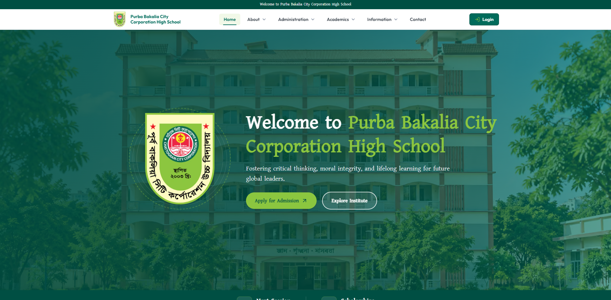
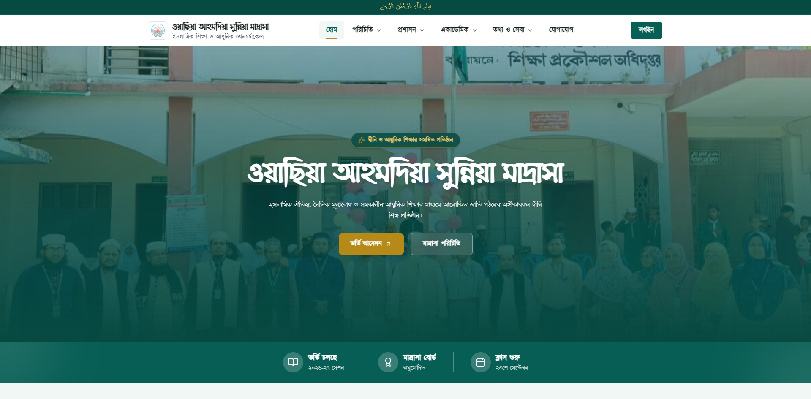
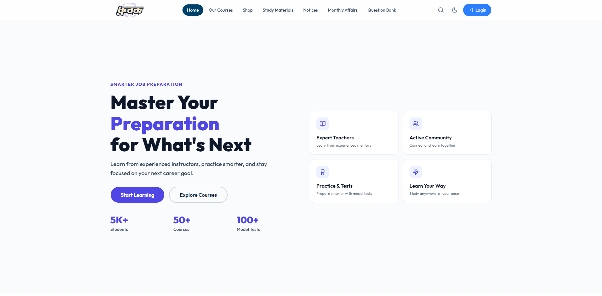
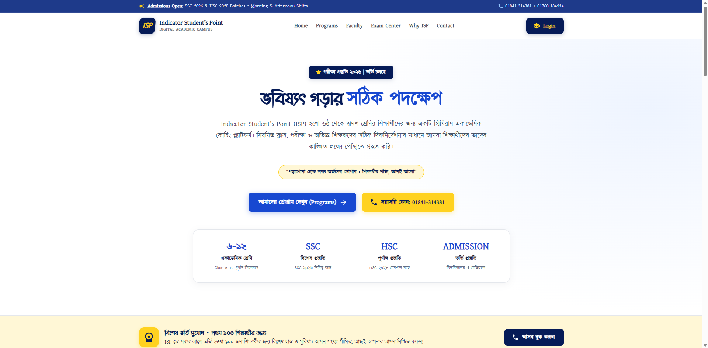
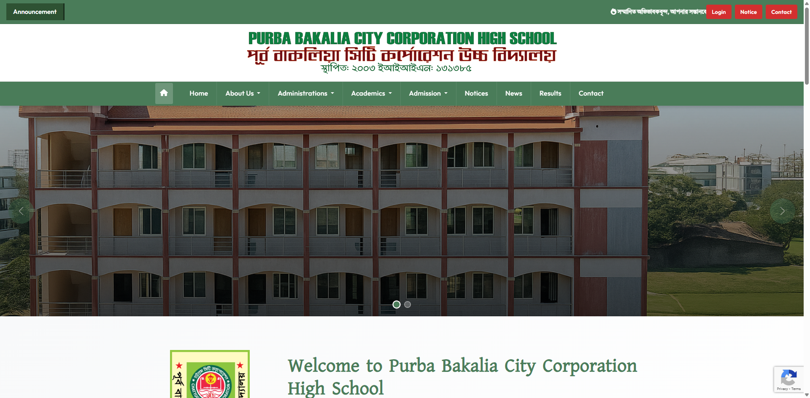
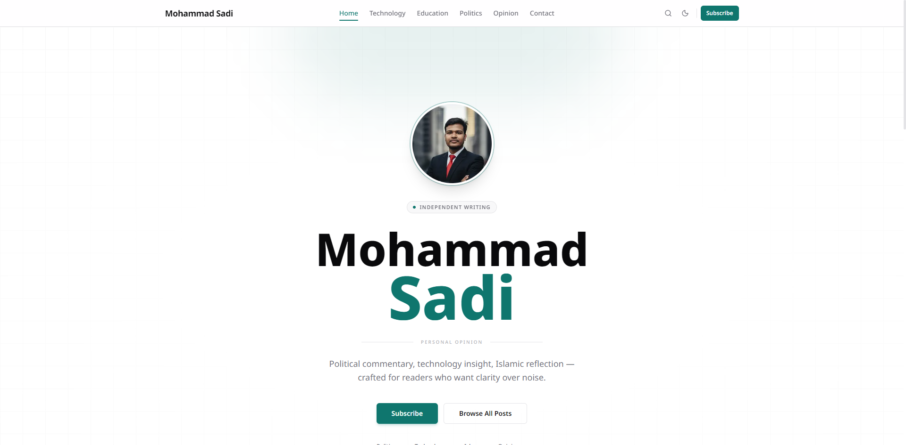

A curated collection of web applications, custom WordPress ecosystems, LMS portals, and high-performance digital platforms.

Complete institutional management system built on the MERN stack for PBCHS with dynamic student database, attendance tracking, notice boards, result publishing, and admin dashboard.

Complete institutional management platform for Wasia Madrasah, featuring academic notices, department management, admission workflows, staff profiles, and student resources.

Scalable learning management platform featuring video course streaming, interactive quiz assessments, student progress tracking, automated handouts, and online enrollment.

Specialized coaching center portal for ISP Chattogram with batch scheduling, routine management, exam result tracking, and automated alert notifications.

High-performance custom WordPress theme built for schools, featuring dynamic circulars, event calendars, teacher directories, and sub-second page load times.

High-end developer portfolio showcasing full-stack capabilities, case studies, interactive UI widgets, smooth animations, and conversion-focused contact dispatch.
Whether you need a custom WordPress platform, an LMS educational portal, or a scalable Next.js web application, let's engineer something great together.